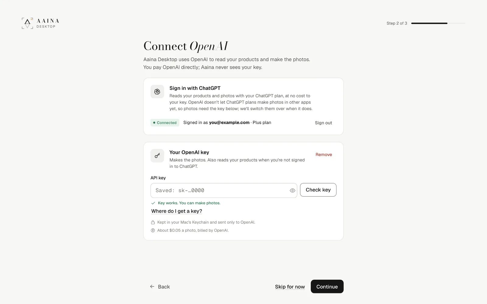
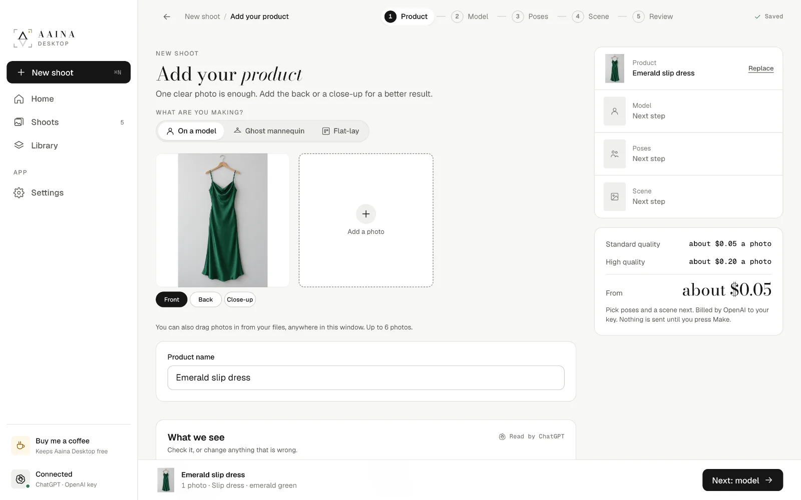
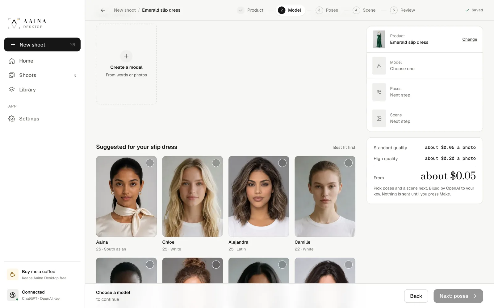
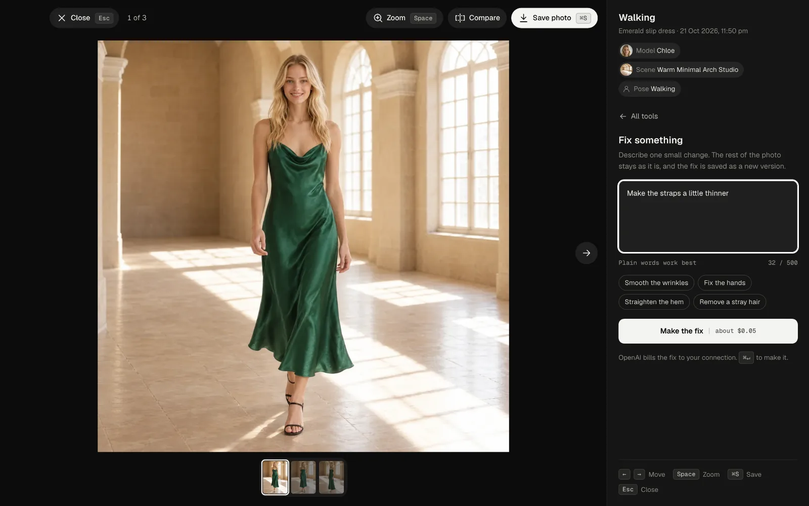
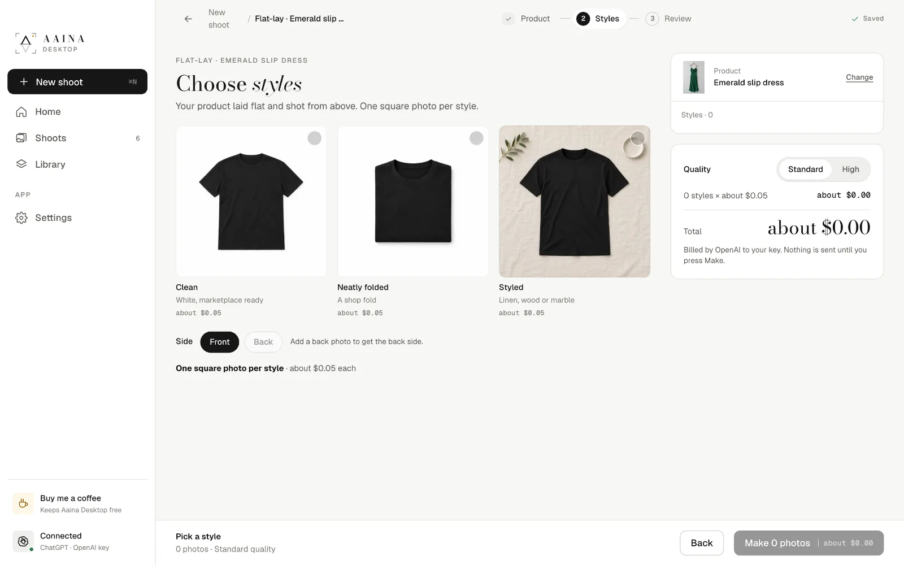
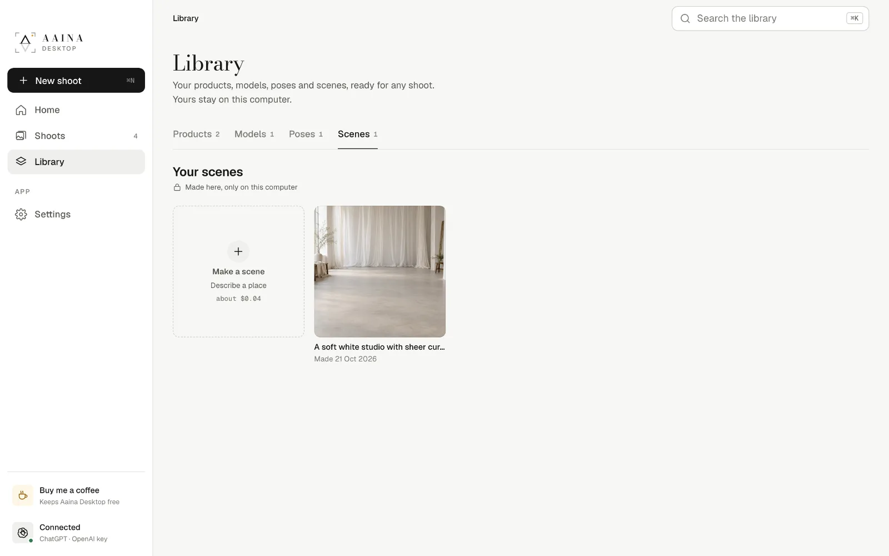
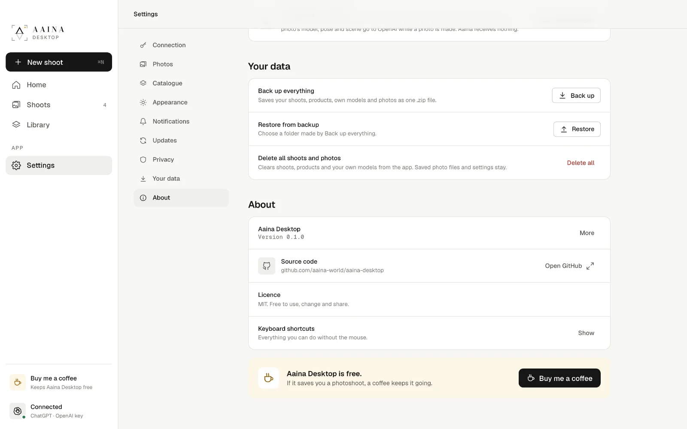

Getting started
Download the app from the home page. There is no account to make. The first builds aren't signed yet: on a Mac, open it once, then choose Open Anyway in System Settings, Privacy and Security; on Windows, choose More info, then Run anyway.
Photos are made by OpenAI with your own account, so you pay OpenAI directly, at their price, with nothing added. That is what keeps the app free.
Sign in with ChatGPT
Every reading, like what your product is, uses your ChatGPT plan at no cost to your key.
Your OpenAI key
Makes the photos, poses, scenes and models. Kept in your keychain, sent only to OpenAI.

Get an OpenAI key
It takes about two minutes, on OpenAI's developer site. It is a separate account from a ChatGPT subscription, though you can use the same email.
- Go to platform.openai.com and sign up or sign in.
- Open Settings, Billing and add a little credit. $5 is plenty to start: about 100 standard photos.
- Open API keys, choose Create new secret key, name it "Aaina Desktop" and copy it. OpenAI shows it only once.
- In Aaina Desktop, paste it into API key and press Check key. "Key works" means you're ready.
OpenAI may ask a new account to verify its organisation before it makes pictures; the app shows the link if so. You can set a monthly limit in OpenAI's billing settings, and delete a key any time.
Your first shoot
A shoot is one product on one model, in one scene, in up to six poses. Each pose becomes one photo.
- Add your product. One clear photo; a back and a close-up help. Check what the app read.
- Pick a model. The best fits for your product come first; search or filter hundreds more.
- Choose poses. Up to six, made for your kind of product first.
- Pick a scene. A studio, a place, a plain colour, or one you made.
- Review and make. Frame and expression per pose; the price is shown before anything is sent.




Edit and save
Open a photo to check it; Compare slides it against your product photo. Every change is a new version, and earlier ones are kept.
- Make again for a fresh version of the same photo.
- Fix something: one small change in plain words.
- Other colours: the product in up to six more colours.
- Save photo as JPEG or PNG, in each marketplace's shape. Every photo is marked as AI-made inside the file.


Ghost mannequin and flat-lay
Ghost mannequin: the garment alone in its worn 3D shape, from the front, three-quarter, side and back. A back photo makes the back exact.
Flat-lay: laid flat and shot from above, clean, neatly folded or styled. Both start like any shoot.


Your own models
A model only you can use. Describe a person and pick one of three faces, or add 1 to 3 photos of a real adult who has agreed to be your model.
The app makes a reference sheet: six photos of the same person that keep the face and body the same in every photo. About $0.35 in all.


Your own poses and scenes
Describe a pose in words, or show one in a photo (only read, never kept). Describe a place for a scene, with a reference photo if you like; scenes never have people in them.
About $0.04 each, kept in your Library for every shoot. Plain colour scenes are free.


Shoots and Library
Shoots lists everything you made: filter, search, save or delete several at once, and open each shoot's folder.
Library keeps your products, models, poses and scenes ready for any shoot.

Settings, backup and privacy
Change your connection, quality, how many photos are made at once, the photos folder and theme. Keep the catalogue for offline use. Back up everything and restore it on any computer.
- Stays on your computer: products, shoots, photos, own models, settings, your key.
- Sent to OpenAI: your product photos, plus the model, pose and scene for each photo.
- Sent to Aaina: nothing. No account, no tracking, no ads.

What it costs
The app is free. Pictures are billed by OpenAI to your own account, and every button shows the rough cost before anything is sent.